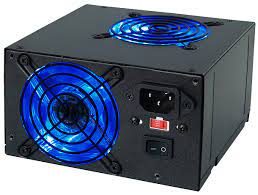

Fuente de poder es un componente del computador que se encarga de transformar una corriente eléctrica alterna en una corriente eléctrica continua transmitiendo la corriente eléctrica imprescindible y necesaria a los ordenadores para el buen funcionamiento y protección de estos. Son conocidas dos tipos de fuentes de poder: Fuente de Poder AT y Fuente de Poder ATX.
 Volver